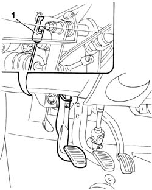
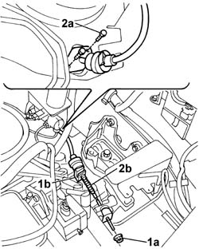

1820A20 release cable - r + r
- Path
- Procedures > 18 CLUTCH UNIT > 1820 CLUTCH RELEASE CONTROLS > 1820A CLUTCH RELEASE MECHANICAL CONTROL > 1820A20 release cable - r + r
- Kind
- repair procedure (removal / refitting; the operation number is the code)
- Applies to
- all engines; all production periods
- Interactive page
- https://sloeber94.github.io/elrnDB-fDbl/en/#/2584565
Applies to: all engines; all production periods
 Removing
Removing
 Refitting
Refitting1. Working from inside the car, disconnect the clutch release cable from the pedal.

Applies to: all engines; all production periods
Disconnect the battery negative terminal.
5530B52 Battery DRIP TRAY/SUPPORT - R.R.
1. Working from the engine bay, unscrew adjustment nut (1a) and release the clutch release cable from its connection on the gearbox (1b).
2. Undo bolts (2a) from the flange on the passenge compartment/engine bay bulkhead, then remove the release cable (2b) from the engine bay.

Applies to: all engines; all production periods
Refitting
RemovingFit the clutch release cable from the engine bay to the passenger compartment through the slot on the bulkhead.
Working from the car passenger compartment, connect the cable to the clutch pedal.
Working from the engine bay, fit the cable to the clutch release lever and the retainer on the gearbox.
Tighten the bolts securing the cable flange to the bulkhead.